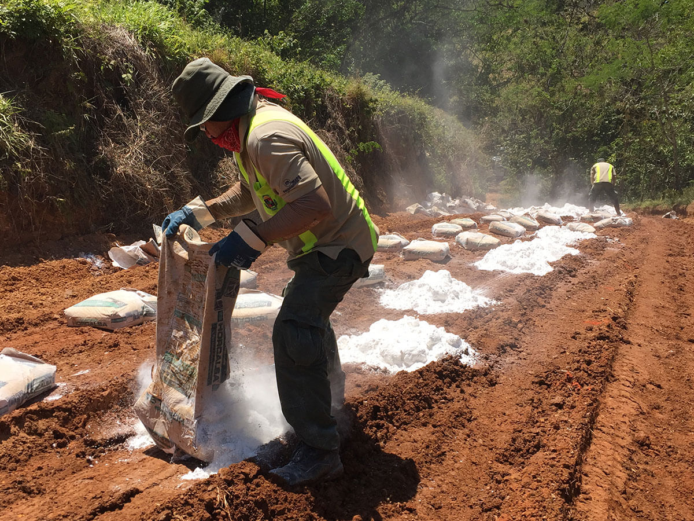

AGROINDUSTRIA
LA DOLOMITA AGRÍCOLA, es un producto mineral natural ECOLOGICO que tiene la función de CORREGIR el Ph de los suelos ácidos por la presencia del Ca así como incorporar un contenido de Mg adecuado para potenciar la función de la “Fotosíntesis” de las plantas, al ser un componente esencial de la “Clorofila”.
